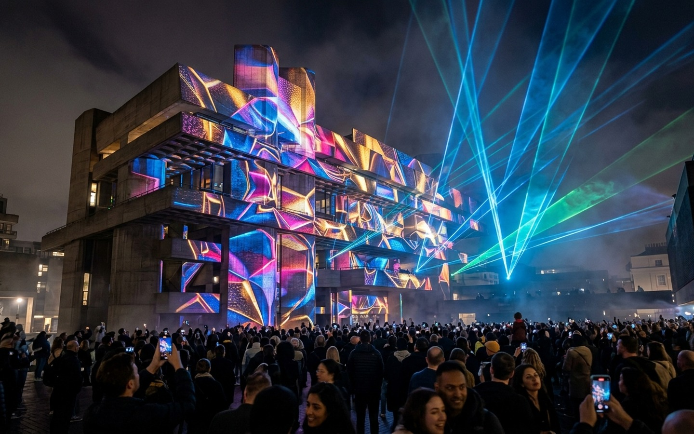
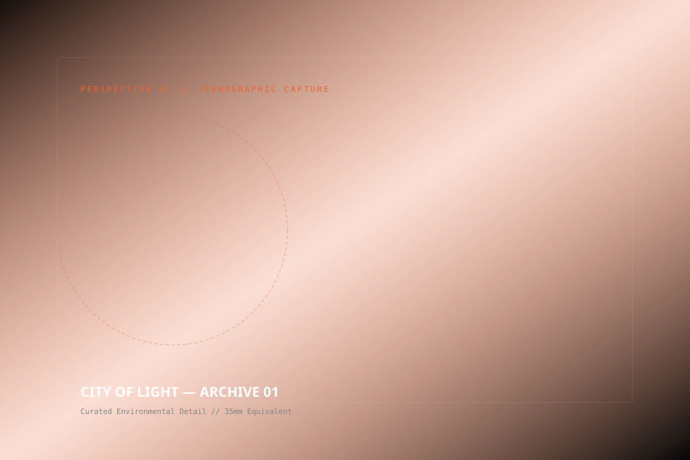
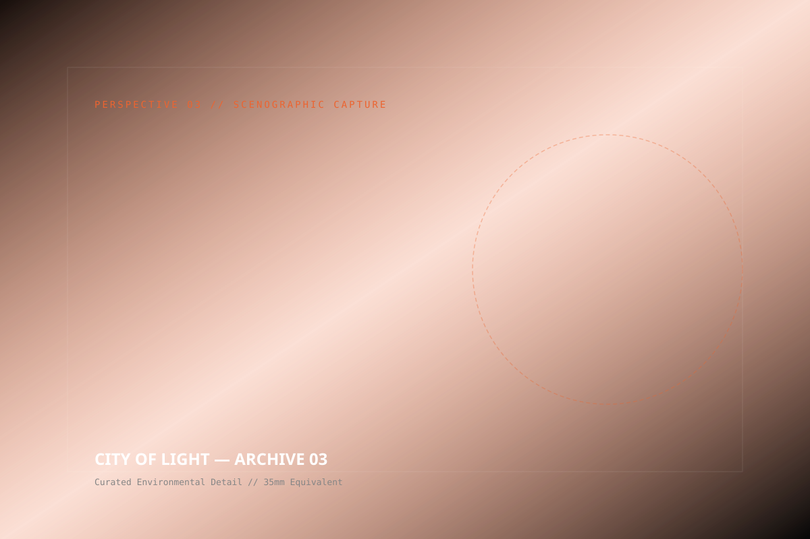

CITY OF
LIGHT
THE CHALLENGE
Public light festivals often succumb to trivial spectacles that lack cultural resonance or sensitivity to the city's architectural fabric. In Cape Town, our brief was to illuminate the historic V&A grain silo complex while honoring indigenous narratives of astral cartography and marine navigation.
Technically, the complex presented extreme challenges: 57-meter curved concrete cylindrical towers, oceanfront winds, high ambient salinity, and zero tolerance for optical pollution over the surrounding harbor shipping channel.
THE SOLUTION
We deployed an array of 32 synchronized 40,000-lumen laser projectors calibrated with sub-millimeter 3D LiDAR point clouds. Custom GLSL shaders mapped generative geometric animations directly onto the architectural seams of the silos.
A 64-channel spatial sound field wrapped the quays, while an accompanying low-latency mobile web app enabled visitors to stream lossless binaural audio through their personal headphones in real-time sync with the projections.
OUR APPROACH
Strategy
Public safety, environmental impact minimization, and cross-cultural community engagement.
Concept
'Astral Cartographies' — tracing ancestral navigation constellations onto industrial concrete.
Design
3D LiDAR scans of the 57-meter silo facade paired with custom procedural GLSL shaders.
Production
Weatherproof optical towers, marine-grade fiber-optic distribution, and zero light pollution spillover.
Experience
Timed 18-minute visual symphonies echoing across the harbor basin every hour on the hour.
Content
Interactive mobile web application allowing visitors to sync their personal headphones to binaural audio.
THE SYSTEM ARCHITECTS


WHEN CONCRETE TURNS TO LIGHT
Every hour on the hour, the industrial waterfront darkened. A solitary low-frequency synthesizer tone resonated across the harbor before the 57-meter silo facade dissolved into a fluid constellation of golden star trails and geometric patterns.

PROJECTION CHRONICLES


“City of Light completely redefined what public monumental art can achieve on our continent. It made the entire harbor stop and gaze in collective awe.”